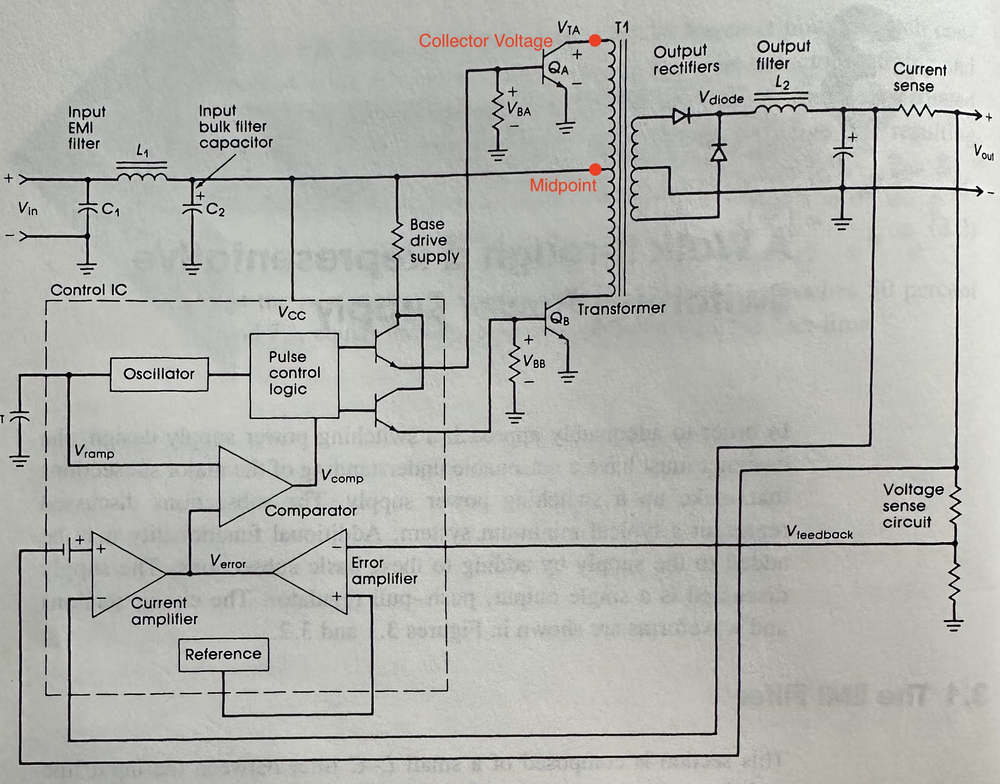
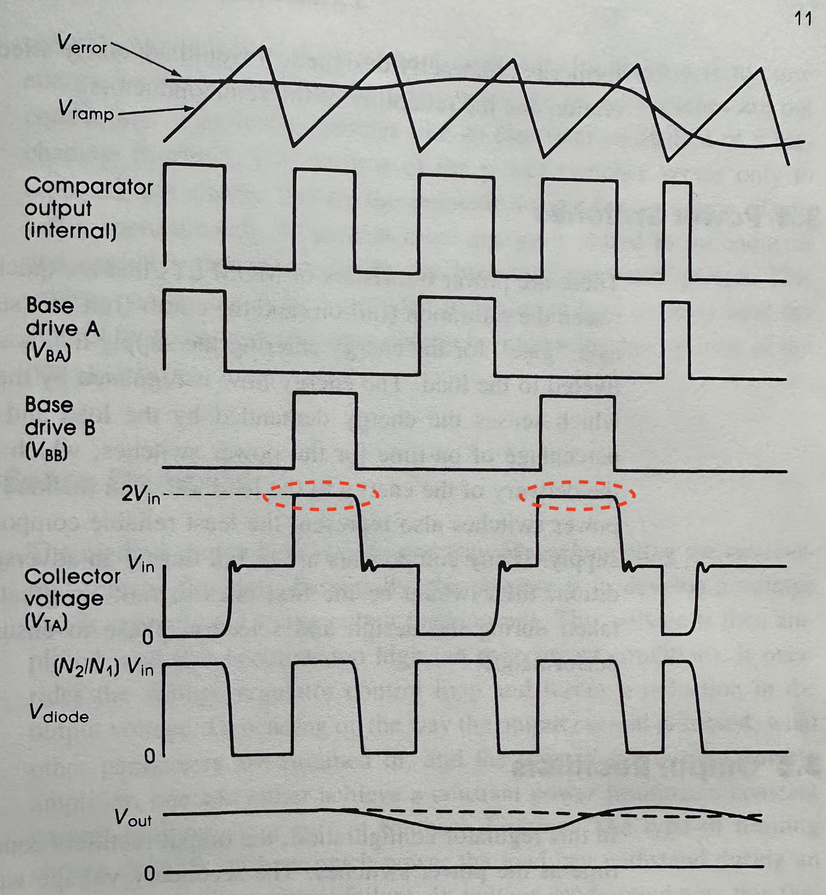

Push-Pull Power Supply Converter Waveforms
Published: 2025-12-05
When I was skimming through the introduction sections of the book Practical Switching Power Supply Design by Marty Brown, I saw a converter diagram arranged in the push-pull configuration. This configuration uses a center tapped transformer both on its primary and secondary sides where each end of the transformer winding is connected to the collector of a bipolar junction power transistor. The transformer in this configuration plays a key role, as it both provides isolation and steps down the supply voltage due to its turns ratio. So, it is important to understand the transformer waveforms to understand the converter operation.

I was surprised to see the collector voltage of the upper switch, measured with respect to ground, can reach twice the input supply voltage (\(V_i\)) when the upper switch is OFF and the lower switch is ON. This switching state should pull the lower end of the transformer winding to 0V. But since the upper switch is OFF, there should be no current flowing in the upper part of the transformer winding, thus no voltage drop. So, I initially thought that the collector of the upper switch should be at the same potential as the middle point of the transformer, which is the input supply voltage \(V_i\). But the waveforms show that this voltage should be at \(2V_i\). Why is that?

The explanation is actually simple when you closely examine the transformer. Note that this is a single core transformer (auto transformer) with the primary winding having three terminals. This means that any magnetic flux generated by the current flowing in the lower part of the winding (when the upper end is floating because the upper switch is OFF) will still be linked to the upper winding, since both are wound on the same core. This flux induces the same voltage across the upper winding (since \(N_{p1} = N_{p2}\)), but no current flows because its terminal is floating. As a result, the voltage at the upper collector terminal—and across the entire primary winding—rises to \(2V_i\) with respect to ground.